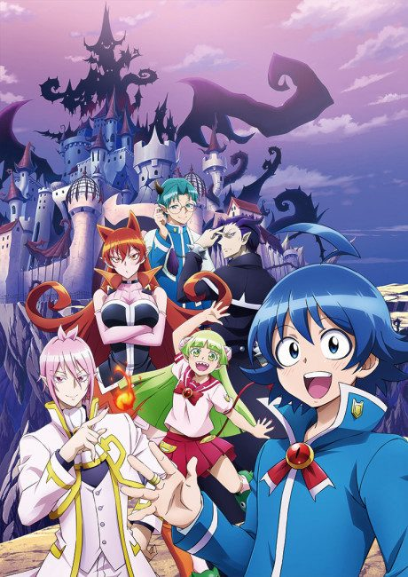

Anime
Anime Manga
MangaMashle: Magic and Muscles
マッシュル-MASHLE-
After the anime, read the manga from Chapter 75.
7.6AniList
—Animeter
24 ep2 seasons
Is it worth pushing through?
Built from what visitors report across all 2 seasons (24 episodes).
Loading reports…Checking what other people said about this one.
Sign in above with your email to add your report.
More like Mashle: Magic and Muscles
 Unclear7.9
Unclear7.9

Manga Ch. 2157.7 Manga Vol. 58.1
Manga Vol. 58.1
 Original7.3
Original7.3
 Manga Vol. 77.2
Manga Vol. 77.2
 Manga Ch. 1118.0
Manga Ch. 1118.0